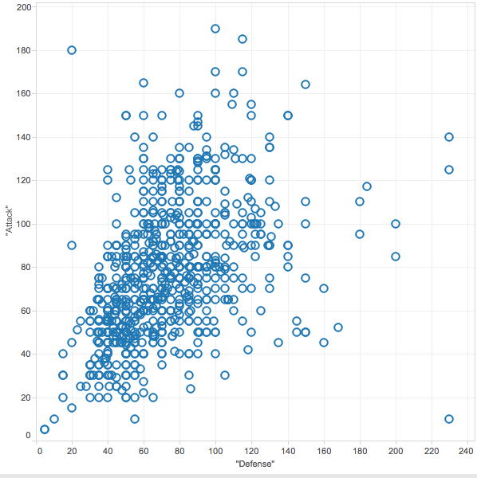
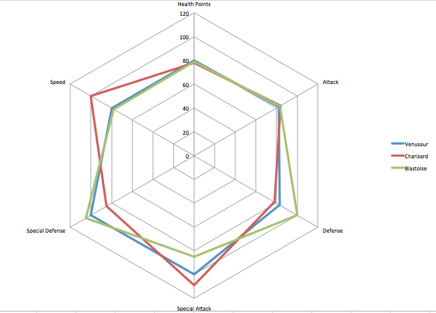

Project Sketch
Project Sketch
Planned Tools
I plan to do all of the visualizations using D3. I have done most of the pre-processing in Sublime and will probably do a little more there and in Excel, as both give great text manipulation ability.
As of now I am not planning to use any libraries, but rather plan to update the base D3 code for anything else I plan to do. I hope that this will further improve my understanding of base D3 before adding additional tools.
Planned Techniques
Parallel Axes
Parallel axes is the best visualization technique I have learned this module so I definitely want to implement an upgraded version of what I did for my homework, with code that will easily translate into future visualizations for work. For this dataset I am planning to use all of the available columns of data I have. I would like to give the option to change the color of the lines based on user preference. The options would consist of all non-numeric columns. Also, I noticed some classmates who had movable columns. I really like the idea that a visualization can be as interactive as possible, so if possible I will try to implement that as well.
Scatter Plot with adjustable dimensions
I think it would be interesting to create an interactive scatter plot. I am planning to allow users to choose what the axes are measuring. That way they will be able to compare and contrast in two dimensions without being limited to a particular pair. I am also thinking of running a principal component analysis in order to give a small introduction to the topic, but that will depend on how much time I have left. I also plan to look into using individual images to allow a small version of the pokemon's sprite to be plotted on the graph. Using a tooltip to allow for the pokemon's name to be displayed would also be a nice touch to be able to tell for certain who ended up where.
Radar Plot based on average of two groups of six
In the game, trainers battle teams of six pokemon each. I think it would be interesting to calculate some averages across teams to compare them. This would give an idea as to which team might be favored in terms of attributes, though it would be far too simple to compute something such as odds of winning. This would be interactive by allowing users to enter in the names of pokemon to create different teams. As of now I am thinking of having one radar plot with both teams' averages overlapping with one another. This will allow for easiest comparison.
These are the techniques I have thought of so far. If another good idea comes I will look into adding that as well.
Planned Interaction
Parallel Coordinates
For the parallel coordinates I would like to allow users to filter data in the plot by selecting regions on one of the axes. Furthermore I would like for them to be able to choose which axes determines the color of the lines, as well as the ability to move axes in case there are certain dimensions they would like to see side by side.
Scatterplot
I would like to add the ability for users to filter by two dimensions, allowing them to compare the 700+ pokemon. I would like users to be able to zoom and pan for this one so that they can get a strong feel for the relative differences in abilities.
Radar Plot
I plan to allow users to filter by choosing six pokemon at a time and compare aggregate stats for the two teams. I think this will be the most fun for users since it will remind them of the game.
Planned Interface


Steven Rea - MSAN 622